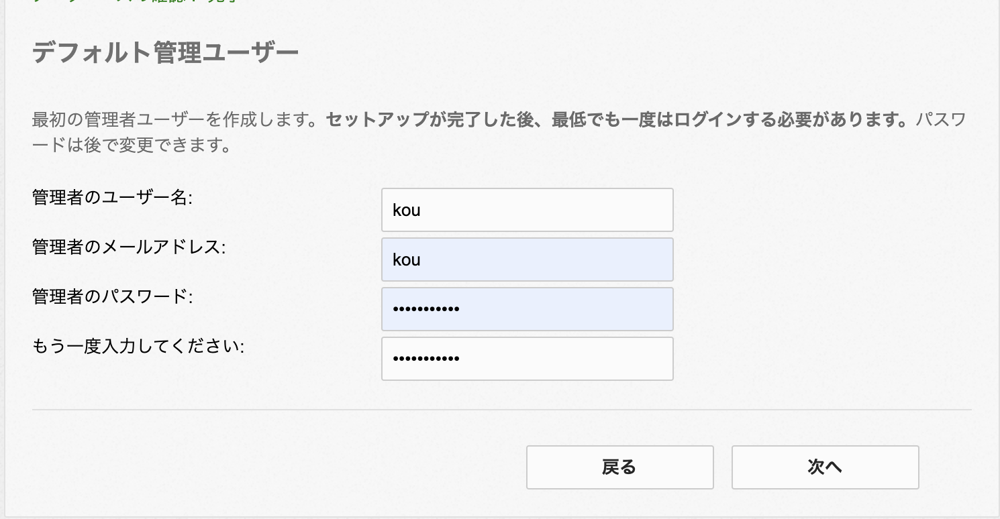

Install Modx Revolution With Docker
用docker构建modx安装环境
什么是Modx
MODx 是一个完全开源免费的 php 内容管理系统（CMS）. 是一个PHP 应用框架，可以帮助使用者控制自己的网上内容。
它是开发人员和高级用户理想的控制系统，任何人都可以使用 MODx 发布、更新、维护动态网站，或 html 静态页面的网站内容。
使用docker构建环境
环境可自行定义，本例的环境参照下面：
- server: nginx:1.12.2
- DB: mysql:5.6.34
- Modx Revolition :modx-2.7.2-pl
- php
1.从GitLab下载modx-docker
2.设置nginx服务器
在nginx/site.conf文件里修改服务器名以及监听窗口号。记得不要漏了分号！否则之后无法启动的！
nginx/site.conf
1 | server { |
3. 设置docker启动时的配置
docker-compose可以理解可以让你一条命令运行多个配置的容器。docker-compose.yml就是配置文件。
下面将nginx的端口号设置成和ngin配置文件里一样：8899，记得这里要加上本地机默认域名，写成这样！ => “127.0.0.1:8899:8899”
然后写上mysql的用户名和密码，mysql的端口号为了避免重复，这里使用’13306:3306’
最后如下文所示：
docker-compose.yml
1 | nginx: |
创建DB数据储存文件夹
在根目录下创建mysql文件夹，用于储存数据库数据。这里的文件夹名与docker-compose.yml里mysql的volumes对应：
1 | volumes: |
创建code文件夹
用于存放modx相关文件
安装modx
移动到code文件夹并在该路径内安装所需的modx
1 | cd code |
解压安装包并重命名文件夹，修改权限
1 | unzip modx-2.7.2-pl.zip |
修改路径回到上层菜单并启动docker容器
1 | cd .. |
这时打开/modx/setup就可以看到modx的安装页面了
安装Modx
安装页面选择语言，点击下一步

设置mysql，将之前设定的用户名密码输入，注意在host处写入mysql，点击验证
在本地连接登陆mysql数据库可以使用下面的命令行
1 | mysql -u modx -h 127.0.0.1 -P 13306 --protocol=tcp -p |
也可以用SequelPro打开


验证成功后选择文字编码,并验证

写入用户名和密码点击下一步 
全部检查项目显示绿色，通过之后就可以安装了

安装成功后输入刚刚设定的用户名和密码进行登陆


大功告成！
进入管理页面之后就可以进行你自己的CMS页面开发了！
遗留课题
如何将现存的数据导入数据库并在本地进行开发